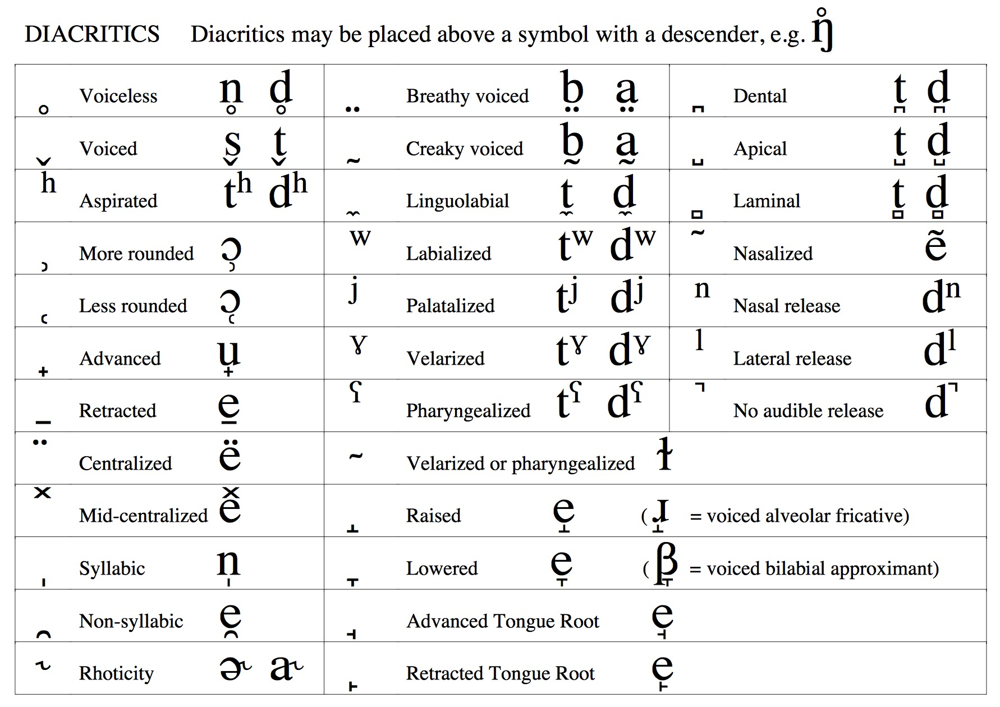
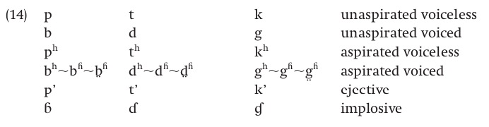

The syllabus has been updated
Will: Wednesday 10:00-11:00am, Friday 1:15-2:30pm, AP&M 4151
Kati: Monday 10:00-11:00am, AP&M 4432
Michael: Friday 12-1pm, AP&M 3351A
Reviewing the IPA and other speech concepts
General Phonetic Concepts for phonology
Phonetics and Naturalness
Consonants: Constrict, obstruct, or divert air in the vocal tract when being produced
Vowels: Shape the (unobstructed) vocal tract to change the sound emitted
| ### Three steps to describing Consonants |
| * We need to know three things: |
| * Place: Where is the sound made? |
| * Manner: What are we doing there? |
| * Voicing: Are we making voicing? |
Ask Sammy the Interactive Sagittal Section!
A vowel is voicing passing through (and resonating in) an unobstructed vocal tract!
If we change the position of the tongue, we change the resonances

They’re always* voiced
They can (and do) occur on their own. I.
We describe vowels using different characteristics
For vowels, we talk about three additional dimensions

 |
Vowels where the tongue moves through the mouth
Start at one vowel, move to another vowel
Things like “boy” (/ɔj/), “buy” (/aj/), “bay” (/ej/), “boat” (/ow/), “cow” (/aw/)
Others are monophthongs


Thanks to Odden’s Introducing Phonology

/r/ could mean /r/ or /ɹ/
≈° for / É/
≈æ for / ʒ/
ƒç for /t É/
ǰ for /d ʒ/
y for /j/
ñ for /ɲ/
Subscript dots for retroflexes
: and ː are both used for length
Numerical tone markings (e.g. bi1 vs. bi5 vs. bi15 vs. bi31)
Government Phonology (c.f. Kaye, Lowenstamm, and Vergnaud 1985) builds a phonology almost devoid of phonetics
Words are built from six primitives, (A), (I), (U), ( ʔ), (L) and (H), which are cognitive, not acoustic or articulatory
Individual sounds are generated via licensing, and interactions among primitives

♇ turns into üúç before ☋
/n/ turns into /ŋ/ before /g/
Why is /pl åmp/ legal while /lp åpm/ wouldn‚Äôt be?
Are /t/, /b/ and /h/ likely to be three alternate forms of the same sound?
How do we know /ŋ/ and /h/ are different sounds in English?
/m/ often becomes /b/, seldom /k/
Natural Classes are a phonetic concept
Backing favors voicelessness
Geminate consonants are more likely to be voiceless
C.f. Ohala Aerodynamics of Phonology
Post-nasal devoicing?
Intervocalic devoicing?
Final voicing?
p -> b and k -> g but t -> l (e.g. Lakota)
Often, this is sound change in process